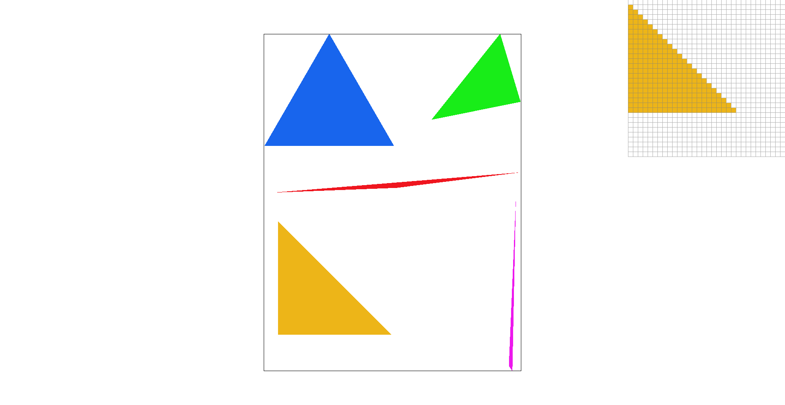
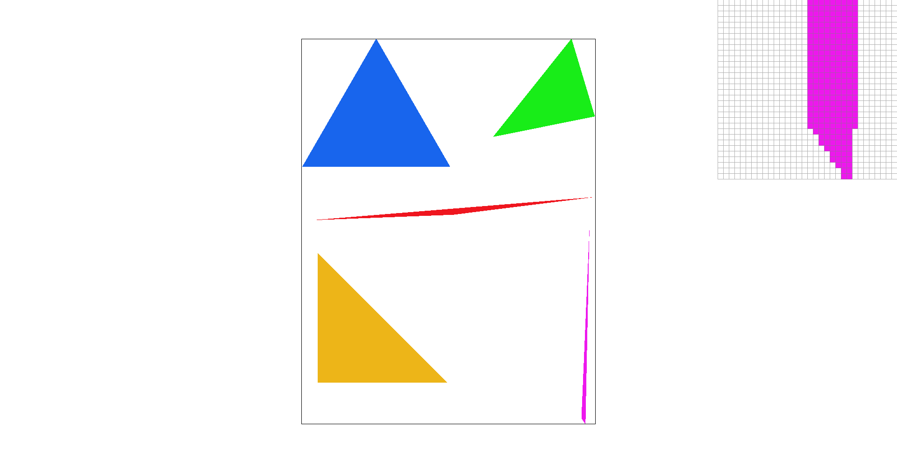
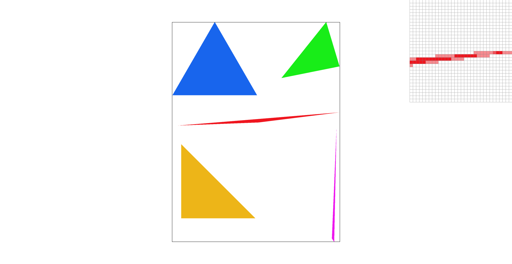
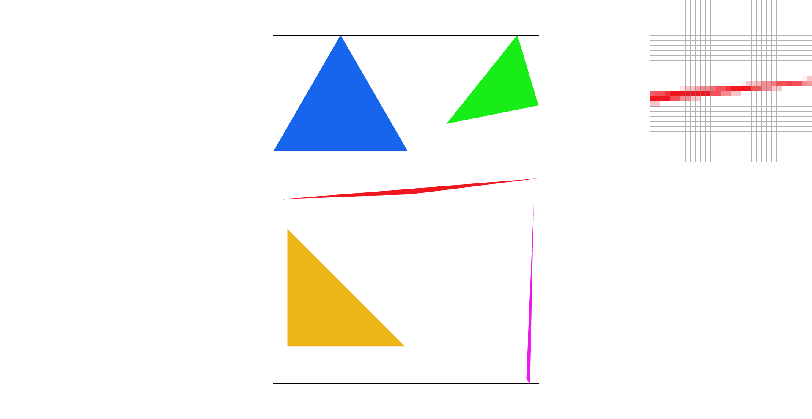
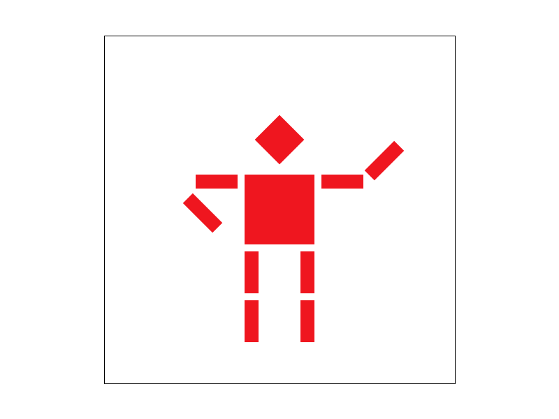
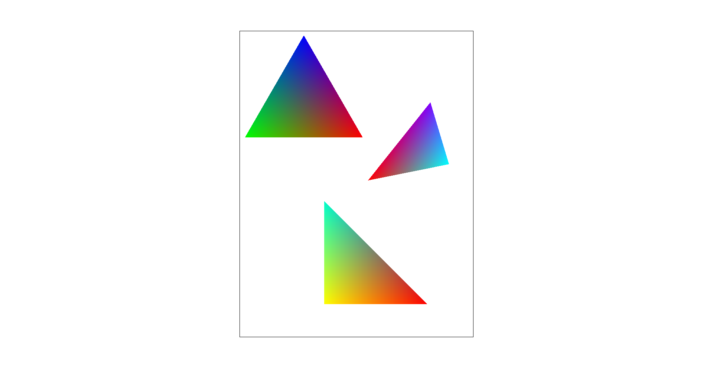
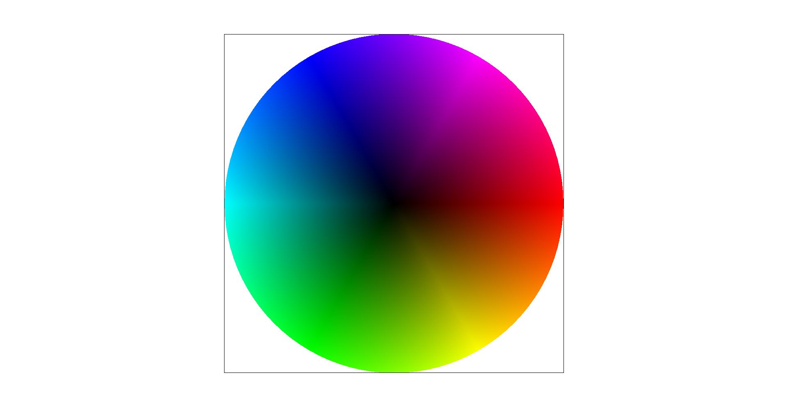
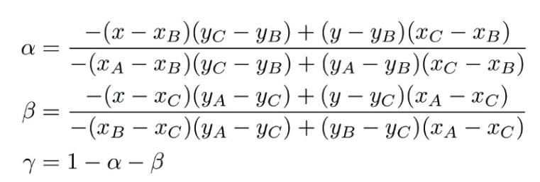

In this project, we implemented a simple rasterizer that can draw SVG components. The rasterizer implements several interesting features, including supersampling, transforms, and texture mapping.
Triangles are rasterized by sampling across the pixels of a given image. The simplest approach, which is how we implemented Task 1, is to sample the point at the center of each pixel. We check if the point is within the triangle we are rasterizing, and if so, fill in the whole corresponding pixel with its corresponding color. The process is as follows:
Here are two examples of our algorithm rasterizing some triangles. This simple sampling algorithm clearly leaves jagged edges and corners that are not as sharp, as there are less points sampled in the triangle. In other words, it doesn’t significantly reduce aliasing. In addition, this algorithm is no worse than one that checks each sample within the bounding box of the triangle since we do sample within the bounding box, thereby reducing the amount of pixels that we have to sample.


Adding supersampling will reduce aliasing, or at least diminish the look of the jagged lines. The lines are much sharper with supersampled rasterization, and the triangles that are rendered have a cleaner look.
The supersampling algorithm is very similar to the original triangle rasterizer, except for two big changes: how points are sampled within a pixel, and how the color that eventually fills the pixel is determined. Due to these changes, some other functions and data structures were used to help.
For our implementation, we iterate through the pixels in the bounding box of the triangle as usual. For every pixel we are on, we take n samples within the pixel instead of just one sample at the center of the pixel (n being the sample_rate). The samples are distributed evenly over the pixel, so there is another set of for loops sampling each of those points within a certain pixel. Now that the number of samples has increased by a factor of sample_rate times, we store the colors at each sample point in the sample_buffer array. The sample buffer size is also changed to account for supersampling, where it’s size is a result of sample_rate * width * height. This is different from how we just called fill_pixel for simple triangle rasterization.
Now to draw to the actual framebuffer, the work is done in the resolve_to_framebuffer function. For every pixel that needs to be drawn, we average the colors stored in the corresponding sample buffer for all the points that were sampled in that pixel. Then this averaged color is what the pixel color is set to. We did this by setting the corresponding color in the rgb_framebuffer_target array and accounted for the difference in dimension between the sample_buffer and the rgb_frambuffer. With this change to how the sample_buffer is used, we also edited the fill_pixel function so that it still draws lines and points correctly even with supersampling by having it modify the sample_buffer directly.
Specifically, these were the changes made to the original rasterizing pipeline:
As you can see in the tip of the red triangle zoomed in, supersampling allows the edge to be more clearly defined and less jagged. As we increase the sampling_rate from 1 to 4 to 9 to 16, it gets better.


I rotated cubeman’s arms so that it looks like he is holding one hand at his waist and waving with the other hand. To make the bending arms look a bit more natural, those rotated forearm rectangles were also translated up and down and to the sides.

These are the matrices we implemented:
Barycentric coordinates are a coordinate system based on the vertices of a triangle. It provides a way to check if a point is within a triangle, and a way to linearly interpolate across the triangle. This linear interpolation isn’t just limited to position coordinates – it can be used to interpolate anything across a triangle, including color. This is what results in the lovely gradient we see in test7.svg, and also in these example triangles with three distinct colors at each corner:


Barycentric coordinates are calculated from the three vertices of a triangle as follows:

Alpha, beta, and gamma end up being the values we want to weight the colors at each of the corresponding vertices to get the smooth gradient.
Pixel sampling is a process that converts a coordinate to a texture coordinate, thereby mapping a pixel to the texture map. Breaking this down, these were the general steps that were used to find the texture map coordinate:
Nearest sampling involves finding the closest pixel on the texture map relative to our current texture coordinate. This effectively means we round to obtain that nearest pixel. For our implementation of this sampling method, we scaled the coordinates by the (width - 1) and (height - 1) of the texture map inside the function to get the texture coordinate (the main reason we decremented the height and width by 1 was to account for indexing). We then rounded it to the nearest pixel. This gets us the desired texture that we want to use.
Bilinear sampling, on the other hand, can be interpreted as interpolating or “averaging” the colors between the four pixels around our texture coordinate. So instead of using one pixel in bilinear sampling, we rely on four to find the texture we want to return. For this implementation, we started out similarly to nearest sampling, where we had to scale by the width and height of the mipmap. However, by using the floor and ceil function, we then calculated the horizontal and vertical offset, specifically the horizontal and vertical difference from the four nearest points. We then grabbed the associated texture for each of the four nearest points and interpolated them (two times horizontally, and one time vertically), which resulted in the desired texture.
Images:
To compare between the different images, we zoomed in on an island. Comparing between both sampling methods and sampling rate, we first look at both methods when they’re sampled at a rate of 1 pixel. With an up close shot, we can see that with nearest sampling, there’s a bit more color variation than there is in bilinear sampling. In other words, if we were to focus on one pixel, there would be more color variation around it. The same can be said with a sampling rate of 16, so with bilinear sampling, overall, we tend to see “smoother” or more blended pixels and lines (and with the image above, it creates a more smooth map). This difference becomes more apparent when we’re working with sharp lines and especially with not as many colors - since bilinear sampling “averages” out the color, it becomes more distinct which sampling method is which based on the coloration of individual pixels.
Level sampling is a process that refers to sampling from mipmaps, which can be thought of as different versions of a texture map where each version has some varying resolution or detail. Generally speaking, the higher you go up in mipmap levels, the lower the resolution becomes (and vice versa). With level sampling, we’re able to pick and choose which resolution we want to show for a certain pixel.
Our implementation of level sampling was done in rasterize_textured_triangle. The overall structure of it was similar to what was done in previous methods, rasterize_triangle and rasterize_interpolated_color_triangle. The main process is as follows:
From here, we needed to get our desired texture point from the mipmap, and the means to get it was dependent on the type of level sampling we used:
Now, there are three available methods we can use to create our image, with each method having its own tradeoffs. With level sampling, we use a significant more amount of memory, since we need to store the different levels. But in turn, it produces notable results for anti-aliasing and is faster than supersampling. Pixel sampling, on the other hand, doesn’t have as much memory overhead and tends to be faster compared to other methods, but can lead to more rendering artifacts. Depending on the pixel sampling method, bilinear can be slower than nearest pixel sampling. Finally, supersampling is the most expensive among the three, in terms of memory and speed, but it also significantly reduces aliasing.
Example:
Looking at the images with varying level sampling and pixel sampling, there is a notable difference between all of them. With just level zero and nearest pixel sampling, we result in an image that has more aliasing than the other images. Level zero and bilinear pixel sampling reduces the aliasing to a certain extent. With nearest level sampling, it smooths out the images too, with a combination of nearest level and bilinear pixel sampling producing the most smooth image (with the edges more “blurred” out).